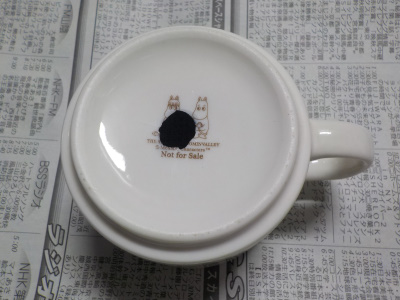
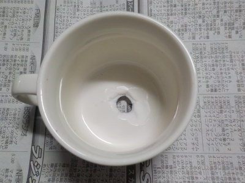
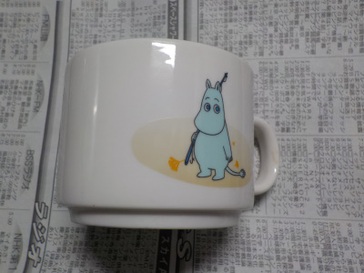
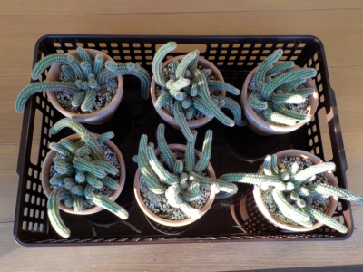
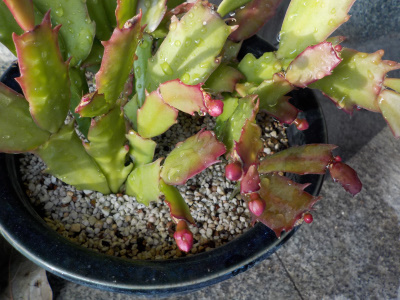
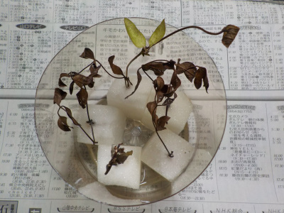
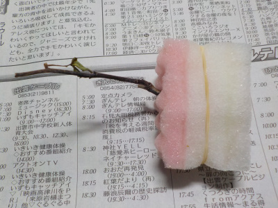
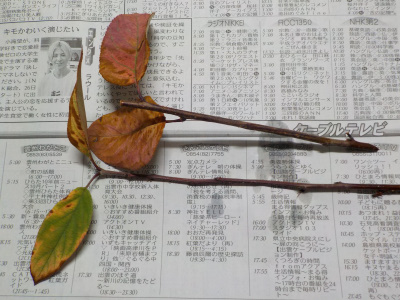
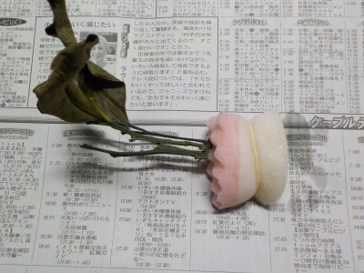
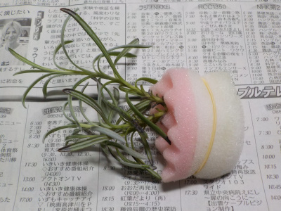

遊びで植物を育てよう
2019/11/24
カナヅチでコップに穴を開けて鉢にしました。
ドリルを使わないで簡単に穴を開ける方法がネットにあったのでやってみました。
1.新聞紙1日分を折ってクッションを作ります。
2.コップの底の内側と外側にカムテープを貼ります。
3.新聞紙の上にコップをひっくり返して置き、カナヅチの尖った方でコップの底をコンコン5分くらい叩きます。
叩いているとヒビが入って穴が開きます。
5分経って穴が開かなかったら、叩く力を少しづつ強くしてみてください。
ガムテープが貼ってあるので、器の破片が飛び散らなくていいです。

実際に開いた穴はこちらです。綺麗な円ではありませんが、見えないのでいいです。

上から見るとこんな感じ。

何かの景品でもらったムーミンの小さいカップです。デザート用かな？
使うことがなく捨てようかと思っていたんですが、植木鉢として利用出来そうです。
【ページTOP】 【11月TOP】
【園芸TOP】
2019/11/23
100均で鉢皿の代用品を買いました。
もうすぐ12月なので冬支度を始めました。

今まで鉢を屋内に入れる時は、鉢の大きさに合った鉢皿に乗せていました。
今回は100均（セリア）でいい感じの箱を見つけたので使ってみました。
横に穴が開いていますが、底と下のちょびっとの部分はプラスチックがあるので、水が少し溜まってこぼれません。
まとめて移動が出来るので水やりが少し楽になりました。
100均で安いので耐久性に不安を感じますが、どうでしょう？。長持ちするといいです。
【ページTOP】 【11月TOP】
【園芸TOP】
2019/11/04
デンマークカクタスにつぼみが出来ました。
あと1月で咲くかな。

寒くなってきたのでそろそろ屋内に移動です。
【ページTOP】 【11月TOP】
【園芸TOP】
2018/11/02
スポンジ挿し木の途中経過

クレマチスは1本だけ生きてます。

バラは枯れたかな。

ドウダンツツジは紅葉しました。

オリーブは葉っぱに潤いがなくなりました。

みかんは枯れたかな。

キンカンは変化ないです。意外と成功するかも。

ラベンダーは成長してます。
【ページTOP】 【11月TOP】
【園芸TOP】
過去の日記
【2018年11月の日記】
【2017年11月の日記】
【2016年11月の日記】
【2015年11月の日記】
【2014年11月の日記】
【2013年11月の日記】
【2012年11月の日記】
【ページTOP】
【11月TOP】
【園芸TOP】
畑仕事じゃないよ。
【おいしいものを食べよう。】【しっかり寝よう。】
【ソロ活をしよう!】【季節感のあることをしよう。】【動画視聴はほどほどに。】【当サイトの全てのコンテンツは無断転載禁止です。】